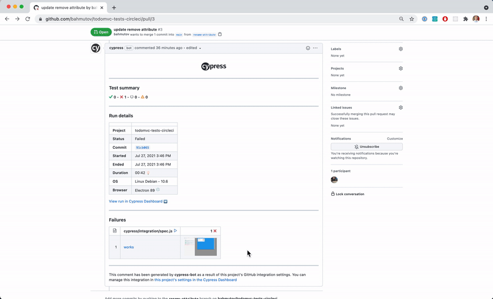

Imagine you are developing a web application and deploying it to preview environments using Vercel. How do you run the tests that reside in a separate repo? This blog post teaches you how to trigger CircleCI workflows after deployment.
Note: I have written a similar blog post How to Keep Cypress Tests in Another Repo While Using GitHub Actions that shows the solution when using Netlify and GitHub Actions.
üéÅ You can find the example application in the repository bahmutov/todomvc-no-tests-vercel and its end-to-end tests in the repository bahmutov/todomvc-tests-circleci. You can see the deployed application at https://todomvc-no-tests-vercel.vercel.app/ and see CircleCI workflows at https://app.circleci.com/pipelines/github/bahmutov/todomvc-tests-circleci. You can find the recorded tests on Cypress Dashboard here.
- The application
- The tests
- The tests workflow
- Trigger CircleCI pipeline
- Trigger the tests on the different branch
- Shortcomings
- The deployment event
- Merging the pull requests
- The remaining problem
- Update 1: record tests on Cypress Dashboard
- Update 2: add the Cypress GitHub integration
- Update 3: trigger the CircleCI pipeline correctly
- Update 4: The downsides
- Update 5: GitHub commit status
- Update 6: Common GitHub commit status
- Update 7: specify baseUrl in the pull request text
- Update 8: set Cypress environment variables
- Update 9: checkbox to skip running all tests
- See also
The application
Every pull request opened in the bahmutov/todomvc-no-tests-vercel is automatically deployed to Vercel at the URL that follows the pattern
1 | https://${VERCEL_PROJECT_NAME}-git-${GITHUB_HEAD_REF}-${VERCEL_TEAM_NAME}.vercel.app/ |
For example, pull request #3 from branch named pr3 shows the following Vercel comment after the deploy:
The tests
The developer would normally run the end-to-end tests against the application running locally. Thus the baseUrl in the cypress.json file points at the local app by default.
1 | { |
I wrote a simple end-to-end test that you can find in cypress/integration folder.
1 | /// <reference types="cypress" /> |
The tests workflow
We want to run our tests on CircleCI using Cypress CircleCI Orb and we want to trigger the pipeline using CircleCI API. To pass the URL to test, we can use pipeline parameters. The workflow file is shown below. I like having a separate "info" just just to print the received pipeline parameters.
1 | # to use orbs, must use version >= 2.1 |
I am including a job "wait-for-deploy" to ping the TEST_URL every 10 seconds until it responds. When this job finishes successfully, the preview deploy is ready to be tested. Let's add another job to the workflow to run after wait-for-deploy is done.
1 | jobs: |
We are using the job run defined in the imported orb cypress: cypress-io/cypress@1 and control it via parameters like config and store_artifacts. Let's run this workflow on CircleCI.
You can click on the "Cypress E2E tests" job to see the stored test artifacts: movies and screenshots.
Tip: while storing test artifacts is possible, Cypress Dashboard does a much better job showing them.
Tip 2: it is easy to mess up YML CI configuration syntax. Luckily, you can use CircleCI CLI utility to validate the config file syntax before pushing the code to the remote repository.
1 | $ circleci config validate .circleci/config.yml |
Trigger CircleCI pipeline
Let's get back to the application repository. We need to trigger the testing pipeline. The first solution is to use a GitHub Actions workflow.
1 | # every time we open a pull request, or a commit is pushed to it |
We will need a project or a personal CircleCI API token to trigger the pipeline. We can store it privately using GitHub Actions secrets tab. The parameters fields will be set as pipeline params on CircleCI. We are passing the current branch name and Vercel PR preview URL we have formed ourselves.
The trigger works. We can look at the list of pipelines to see the pipeline #13. The triggered pipelines do not have a commit message.
The info job shows the parameters passed from GitHub.
The screenshot image in the test artifacts in the "Cypress E2E tests" job shows the preview URL was tested.
Trigger the tests on the different branch
When developing the application feature, the programmer probably has updated or new tests in the corresponding branch in the test repo. Thus when testing the pull request against the branch feature-X we want to check out a branch with the same name from the test repo before running tests. Here is how we can do this via reusable CircleCI commands and Cypress Orb post-checkout parameter:
1 | # to use orbs, must use version >= 2.1 |
Note: the above fragment comes from the repository bahmutov/circleci-checkout-experiment where I experimented with CircleCI to ensure this specific way of running tests from the test branch works.
Shortcomings
The approach to testing the preview deployments described above works, but has a bad drawback. It tests the branch preview URL, and not the individual deploys. Imagine the pull request has several commits, each triggering a test run. Imagine that building and deploying the preview URL takes 5 minutes, while the tests only take 1 minute. The sequence of events can be see in the table below.
| wall clock | event |
|---|---|
| 00:00 | very first deploy to the branch "my-feature" with commit A |
| 00:01 | open pull request "merge-my-feature" from branch "my-feature" |
| 00:01 | Vercel starts building and deploying "https://merge-my-feature..." preview |
| 00:01 | GitHub Actions trigger CircleCI pipeline with TEST_URL=https://merge-my-feature... |
| 00:01 | Job wait-for-deploy starts pinging "https://merge-my-feature..." url |
| 00:06 | Vercel deploys "https://merge-my-feature..." url |
| 00:06 | Job wait-for-deploy finishes after receiving 200 response from "https://merge-my-feature..." url |
| 00:06 | Job Cypress E2E tests runs tests against the "https://merge-my-feature..." url |
| 00:10 | user makes another push to the branch "my-feature" with commit B |
| 00:10 | Vercel starts building and deploying "https://merge-my-feature..." preview |
| 00:10 | GitHub Actions trigger CircleCI pipeline with TEST_URL=https://merge-my-feature... |
| 00:10 | Job wait-for-deploy starts pinging "https://merge-my-feature..." url. |
| 00:10 | Job wait-for-deploy finishes almost immediately because the url responds. The preview still has commit A code. |
| 00:10 | Job Cypress E2E tests runs tests against the "https://merge-my-feature..." url |
| 00:16 | Vercel deploys "https://merge-my-feature..." url, but nothing tests the deployed commit B code |
If we trigger the CircleCI pipeline immediately from GitHub Actions, then the second commit will trigger running the tests. The tests will start quickly because the job wait-for-deploy hits the already deployed branch preview URL, the tests pass. Then the Vercel preview happens - and it never gets tested!
Thus we need something better - we need to trigger the CircleCI pipeline after Vercel successfully deploys.
The deployment event
Luckily, Vercel GitHub integration delivers a deployment_status event as I described in Test the Preview Vercel Deploys. Let's first look at the events delivered by Vercel to GitHub Actions.
1 | # print info from deployment events sent by Vercel |
The deployment_status event is delivered twice: first with the status pending, then with the status success. The event also has the unique URL of that deploy - because Vercel does immutable deploys.
Thus we can trigger the CircleCI pipelines using a unique URL after the deployment has finished, see deploy.yml
1 | name: deploy |
The above GitHub Action workflow triggers the CircleCI pipeline with unique URL which you can see in the test screenshot.
Merging the pull requests
When we modify the code and the tests in two repos, we have two open pull requests. Which one do we merge first? It is a little bit of a chicken and an egg problem.
- We cannot merge the application pull request first - if it runs the tests before we merge the pull request in the test repo, the tests will fail, since they are still original tests.
- We cannot merge the test pull request first, since the application code is still the original source, and not what the tests expect to see.
We can try to time it and merge the code first, then while it is building merge the test pull request, hoping it would hit the the deployed updated application. But I would suggest a simpler approach.
- Merge the tests first, but skip the build using the
[skip ci]text in the commit subject, see CircleCI docs for example. In the screenshot below I am squashing 3 commits in the test repo into a single commit that should not trigger the tests.
The CircleCI shows the test commit was noted, but did not trigger the workflow.
- Merge the code change pull request. It will trigger the tests that are now match the code.
Problem solved.
The remaining problem
Our implementation is almost perfect. The tests are triggered correctly, the deployment URLs are unique - but we cannot pass the branch to the CircleCI pipeline! The TEST_BRANCH parameter is empty because the deployment_status event has no "memory" of the branch that has triggered the deployment, and the GitHub environment has no GITHUB_HEAD_REF set - because GH does not "know" which branch you are testing or deploying.
I wish Vercel included this information in the event details, since their system knows which branch has been deployed. We could use this information to checkout or trigger the right branch in the test repository. Then we could modify the application in branch feature-X while updating the tests in the separate repo using the same branch name feature-X. When the preview URL has been deployed we would run the tests from branch feature-X.
Workaround
The Vercel deployment event has the commit SHA. If you dump the GitHub event object, check the sha property:
1 | { |
We can check out the full repository and find the branch name the commit belongs to (assuming the pull request commit really belongs to one branch)
1 | echo "Deployed commit ${{ github.sha }}" |
Update 1: record tests on Cypress Dashboard
Cypress Dashboard is very useful for showing the results of tests and quickly diagnosing the failed ones. I have set up the test recording, you can see the run results here. The CircleCI cypress/run job gets a few extra parameters:
1 | - cypress/run: |
We can include the results Markdown badge in both the tests repo's README, and in in the TodoMVC application's README file.
Note: when recording test results on Cypress Dashboard, I usually disable storing the videos and screenshots as test artifacts on CI, since it is no longer useful.
Update 2: add the Cypress GitHub integration
After recording tests on Cypress Dashboard, I have installed Cypress GitHub Integration App in the test repo. You can give the app access to all your repos, or just select ones.
üîê Note that the app only needs read and write access to the commit statuses and pull requests, no source code access. For more, read What does Cypress record? and Cypress Security page.
Once we gave the Cypress GH app access to our repository, we can link the Dashboard project back to the repository and enable pull request comments and status checks.
Let's work on a new application feature - let's change a selector for the "remove todo" button.
1 | - <button data-cy="remove" ...>x</button> |
We have opened a new pull request in the application repo with this change. The status checks on the application repo are all green - because our GitHub integration is connected to the separate repo. On the separate repo we see a status check on the last commit to the main branch - because that's the commit the CircleCI pipeline has run against when triggered.
Let's open a repo with the same branch name as the branch in the application.
1 | git checkout -b rename-attribute |
We can update the test to pass against the updated application.
1 | - cy.contains('.todo', 'Learn about React').find('[data-cy=remove]').click() |
But now we have a problem - we need to trigger the pipeline with the tests on the branch rename-attribute in the todomvc-tests-circleci repo in order for the Cypress GH Integration to tie the test results to the right pull request. We can trigger the pipeline using the branch name, plus we can use a fallback - if there is no branch with the given test name, trigger the default pipeline. Our deployment status GitHub Actions workflow is thus:
1 | ... |
Let's say a test fails, because the application renamed the data-cy attribute back to remove. Then the pull request #3 shows the test results and the details for the failed test, including a screenshot thumbnail and a link to the test result on the Dashboard.
My favorite part in all of this, is clicking on the failed test's thumbnail, seeing the application screenshot at the moment of failure, then inspecting the test history to see if the test was modified recently (it was).

Maybe we need to change it back to make it work... I have changed the test command back to .find('[data-cy=remove]') and committed the test while skipping the CI.
1 | g done "change test back [skip ci]" |
Let's re-run the CircleCI pipeline - but we can re-run the failed E2E test job only.
The updated test fixes the pipeline and the test comment is updated.
Again, we can click on the comment to inspect the test run, including the test change history.
Update 3: trigger the CircleCI pipeline correctly
After experimenting with triggering the CircleCI pipeline, I found that using curl with the fallback branch is really tricky. If the branch is not found, the request fails but the status code is 200, since curl receives an object. To make it robust I have written a little utility trigger-circleci-pipeline that you can use to trigger a pipeline run on a given branch with fallback to the default branch.
1 | assuming the environment variable CIRCLE_CI_API_TOKEN |
Update 4: The downsides
Nothing in life is truly free, so keeping the tests in a separate repo does come with downsides.
- mental and documentation overhead. Want to add a feature? Please read how to open two pull requests, how to name the branches, and of course, remember how to merge the tests and the code - the order matters. The code and its tests are disjoint, but they should be together so the tests validate the code change. It is like a summer camp - you want the team leads to stay with the campers in the same cabin, otherwise all hell breaks loose.
- working on the tests and need to add a
data-cyattribute to an element? Oops, need to open a matching pull request, make sure they are linked to each other, and merged in the right order. This discourages small testability improvements. - the CI needs to know how to trigger the second workflow. Yes, I wrote trigger-circleci-pipeline, but why would you want a separate authentication and parameter passing headache?
- re-running the tests from a branch of the test repo ... runs them against the main branch of the code. Yup, need to remember to add the
TEST_URLwhen starting the workflow manually, also do not forget to add a parameter to tag the recorded Dashboard run. Mental overhead. - merging means juggling the two pull requests. Need to revert the code change? Remember - you need to find and revert the companion tests. Otherwise you get a failed test run. Oops, it should not count, but here it is - blaring to everyone "failed test, failed test!"
- every time a code pull requests lives longer than a few hours, its tests fall behind other tests, and might fail when running because there is a mismatch between some element logic. Your PR has no tests, so you run the default tests? Oops, the latest tests already assume the code changes YOUR PR does not have yet. Better constantly merge the main branch before pushing. Ohh, you merged the latest code, but forgot to merge the latest tests too? Too bad, the tests failed.
- want to review a pull request, go and find the matching test pull request too. Do not forget to copy / paste all the links around, because one thing we all do very well is copy / pasting Jira & GitHub URLs around.
- if you use Cypress Dashboard with GitHub Integration - well, it comments on the test pull request, and does not block or post status on the code pull request. You could write some glue code to re-post the GitHub status from the test pull request to the code pull request. You would need authentication, and the test results, and ignore the failed Cypress run exit code to run your utility... but why would you write all that glue code if you could simply ... run tests in the same repo so it all just worksTM?
- speaking of Cypress Dashboard. When tests are triggered, the information shown in the Dashboard ... has the last commit of the test repo, which says nothing about the code tested. Seeing unrelated commit messages, not being able to jump to the application code really is unfortunate.
- writing end-to-end tests is the start of the quality journey. You want to know what you are testing, and what you have missed. Code coverage from E2E tests is a very effective way to discover features the tests have missed. Instrumenting the code in the same repository while doing the testing is probably ten times easier than trying to instrument the built web application and mapping the results back to code.
- you probably will want to start sharing some code from the application with the tests, like constants, translations, TS types, API and database connections. This requires the tests to be close to the application.
- finally, Cypress has killer component tests. You can only write and run those from the same repository, since the component tests import the ... source components.
Ultimately, I believe that becoming familiar with end-to-end tests and making a proof of concept allows for using the tests in a repo separate from the web application. But you do want to eventually merge the tests to live closer to the code to make the entire process as simple as possible. After all, your mental energy should be directed towards the feature work, not towards the repo juggling.
Update 5: GitHub commit status
When the tests run in one repo, you can send the statuses back to the original application repo. You do need to send the commit SHA to know where to set the status though. For example, I am using the CircleCI pipeline parameter TEST_COMMIT
1 | TEST_COMMIT: |
Inside the test project, you can use my plugin cypress-set-github-status that registers itself inside the plugin process.
1 | module.exports = (on, config) => { |
To authenticate, we are using a personal GitHub token. Each commit in the repo bahmutov/todomvc-no-tests-vercel will trigger the CircleCI run in the tests repo, but it will set the pending status for each machine and then the final test result. The "Details" link leads to the Cypress Dashboard run (if the run was recorded), or to the CI job.

I picked the single status per CI machine because GitHub has a limit of 100 statuses per commit, which can be exceeded with lots of specs or tests. But the number of machines running tests in parallel is unlikely to surpass the limit.
Update 6: Common GitHub commit status
When using multiple machine statuses above, each context is different. Thus you cannot have a branch status check to require before merging the pull request. You need to have a single status check with a pre-determined context to make required. This is what a common github commit status can provide.
- First, before running the test jobs create a pending commit status. For example, in todomvc-tests-circleci the .circleci/config.yml
cypress/installjob uses cypress-set-github-status binset-gh-statusto create it
1 | - cypress/install: |
- In the plugins file, we add the
commonStatusproperty using the same context as above. In my case, I am using "Cypress E2E tests" to name the common GH status.
1 | // when we are done, post the status to GitHub |
When the PR #12 deploys, it triggers the tests in the tests repo. The install job immediately sets the pending "Cypress E2E tests" status.

Then the cypress/run jobs start, each can report its own status with machine number.
The first successful test run changes the common GH commit status to "successful". If a test run fails, it changes the common commit status to "failed" - it stays failed. Thus you can use the common GH status to block the pull request.
With this common GH status, you can set up the required status check and configure the branch protection rule
Update 7: specify baseUrl in the pull request text
Using grep-tests-from-pull-requests you can also extract the baseUrl to run the tests against. Just list it by itself in the text of the pull request:
1 | baseUrl <URL> |

It makes sense to specify the default base URL in the project's PULL_REQUEST_TEMPLATE.md. The user can edit that URL and run the tests again by pushing new commits. Watch the entire process in the video below.
Update 8: set Cypress environment variables
Editing the pull request text is simple, and if one can re-run the tests, the tests can extract additional information from the pull request text, besides the baseUrl. I have added reading additional CYPRESS_ variable values and setting them into the config.env object to make them available using the Cypress.env(key) command. For example, if the pull request has lines starting with CYPRESS_ like these:
1 | Set additional Cypress environment variables |
Then Cypress will have the following object automatically added when it runs:
1 | $ Cypress.env() |
Update 9: checkbox to skip running all tests
Sometimes it is convenient to skip running the test jobs completely. The plugin has a script to find the following checkbox in the pull request body.
1 | # Summary |
The user can uncheck the checkbox and the CI script can halt itself if the bin command exits with code 1 (meaning the user does not want to run Cypress tests). For example, this Bash command will halt the current CircleCI job if the above checkbox is unchecked.
1 | if [[ ! -z "$CIRCLE_PULL_REQUEST" ]]; then |
Tip: the command circleci-agent step halt only stops the current job. You might want to cancel the entire workflow instead.